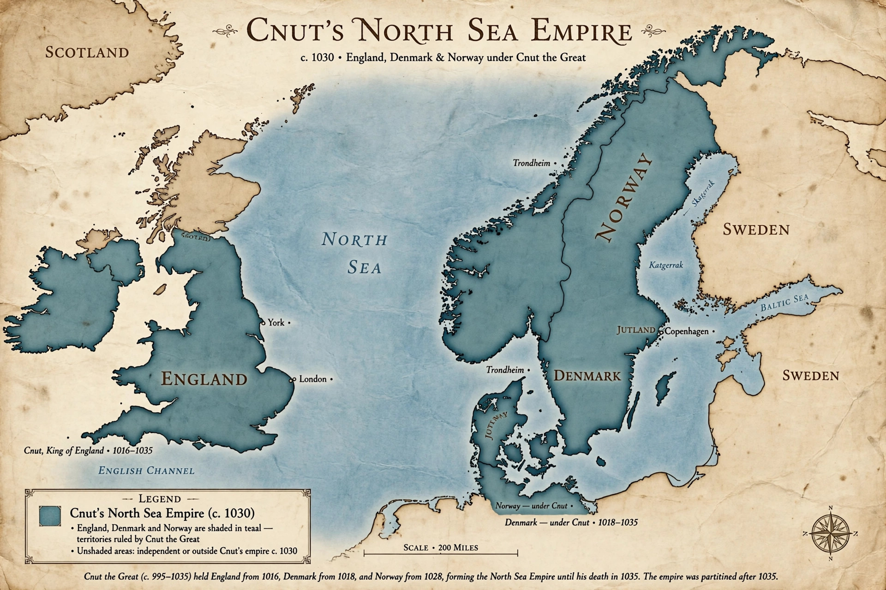

North Sea Empire
| North Sea Empire | |
|---|---|
| Period | 1016–1035 (height 1028–1035) |
| Ruler | Cnut the Great |
| Territories | England, Denmark, Norway, and parts of Sweden; influence over Scotland and Wales |
| Status | Personal union of crowns; dissolved after Cnut's death in 1035 |

The North Sea Empire, also known as the Anglo-Scandinavian Empire, is the modern historians' name for the personal union of the kingdoms of England, Denmark and Norway under Cnut the Great between 1016 and 1035, at its greatest extent from 1028, when Cnut added Norway to his English (1016) and Danish (1018) crowns. It was never a single unified state — each kingdom kept its own laws, coinage and aristocracy — but it made Cnut the most powerful ruler in northern Europe and briefly turned the North Sea into a Scandinavian lake.
Formation
Cnut's father, Sweyn Forkbeard of Denmark, had conquered England in 1013 but died weeks later. Cnut returned in 1015 with a great fleet, and after the deaths of Æthelred and Edmund Ironside he was acknowledged king of all England in 1016–1017, marrying Emma of Normandy to legitimise his rule. On the death of his elder brother Harald II in 1018 he inherited Denmark. In 1028, with a fleet of fifty ships from England, he drove Olaf II from Norway and was acclaimed king at Trondheim, completing the union; he also claimed overlordship of part of Sweden and received the submission of Malcolm II of Scotland.
Government
Cnut governed England through great earldoms (Wessex, Mercia, East Anglia, Northumbria) and governed his Scandinavian realms largely through deputies — his son Harthacnut in Denmark, and in Norway first Håkon Eiriksson and then Cnut's son by Ælfgifu of Northampton, Svein, with his mother. He issued law codes for England drafted with Archbishop Wulfstan, patronised the Church in all his realms, made a pilgrimage to Rome in 1027 for the coronation of Emperor Conrad II, and kept the sea-lanes so secure that contemporaries praised the peace of his reign.
Dissolution
The empire was a personal creation and did not survive its maker. On Cnut's death at Shaftesbury in November 1035 his kingdoms split: Harthacnut took Denmark but, detained there by war with Norway, lost England first to his half-brother Harold Harefoot (died 1040) before ruling it 1040–1042; Norway reverted to Olaf's son Magnus. With Harthacnut's death in 1042 the English crown passed to Edward the Confessor, and the North Sea Empire was over — though Danish kings renewed their claim to England until the age of the Norman Conquest.
See also
Cnut · Emma of Normandy · Sweyn Forkbeard · Harthacnut · Viking activity in the British Isles